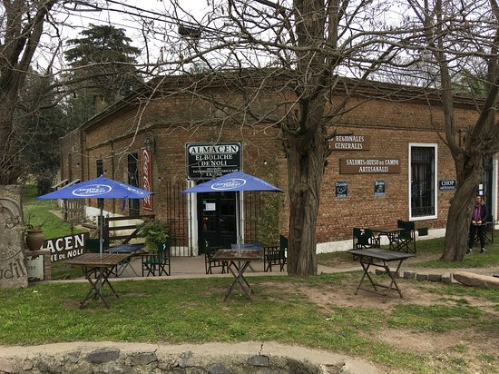
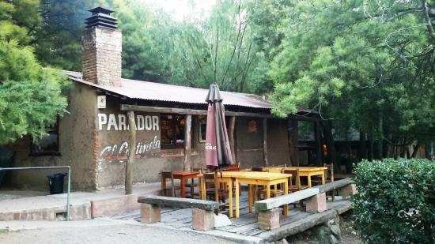
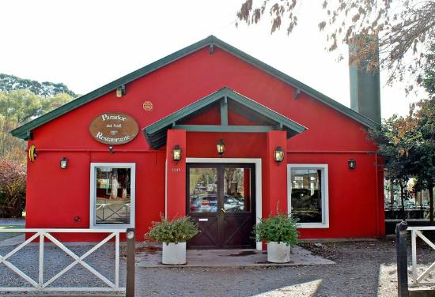

Restaurantes en Tandil
Bodegon del Fuerte

Direccion: Belgrano 589 Telefono: 0249 442-4219
Boliche de Noli
Direccion: Av. Don Bosco Centro Telefono: 0249 15-462-8178
El Estribo

Direccion: San Martin 759 Telefono: 0249 442-5943
Complejo Parador el Cerro
Direccion. Cerro el Centinela s/n Telefono: 0249 463-1510
Epoca de Quesos

Direccion: 14 de Julio 604 Telefono: 0249 444-8750
El Grill Argentino

Direccion: Gral. Rodriguez 552 Telefono: 0249 444-8666
La Pulperia

Direccion: Av. Estrada 1395 Telefono: 0249 443-6699
El Parador del Sol
Direccion: Dr. Osvaldo Zarini 1385 Telefono: 0249 436-7777